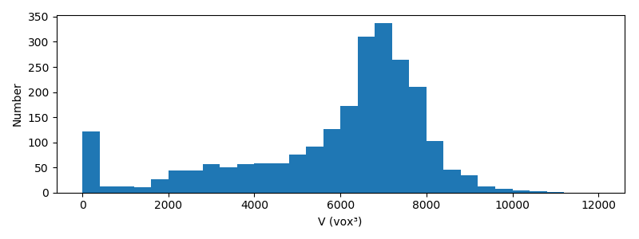
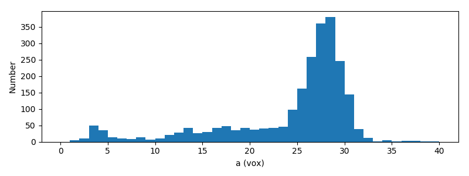
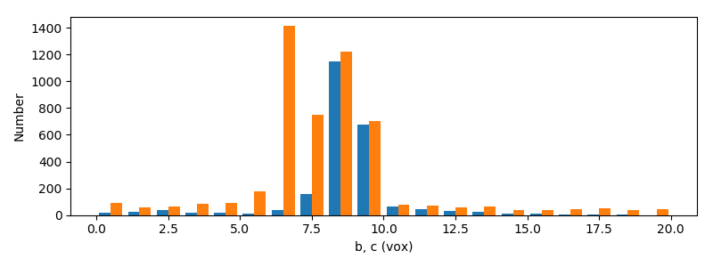

In the previous instalment of this series, we have segmented the 3D image of the assembly of rice grains. In other words, each voxel of the image is attributed the label of the grain to which it belongs. Remember the initial goal of this series: we want to quantify orientation correlations between grains. To do so, we must analyse the orientation of each individual grain. This is the topic of the present post.
It is customary to define the orientation of an elongated object by means of the eigenvectors of the tensor of second moments, defined as follows \[ J_{ij} = \int_\text{Grain}\bigl(x_i-X_i\bigr)\bigl(x_j-X_j\bigr)\mathrm{d} x_1\,\mathrm{d} x_2\,\mathrm{d} x_3, \tag{1}\] where the integral is carried out over the grain, and \(X_i\) denotes the \(i\)-th coordinate of the grain’s center of mass \[ X_i = \frac1V\int_\text{Grain}x_i\,\mathrm{d} x_1\,\mathrm{d}x_2\,\mathrm{d}x_3 \] (\(V\): volume of the grain). In coordinate-free form, Eq. (1) reads \[ \mathbf{J}=\int_\text{Grain}\bigl(\vec x-\vec X\bigr)\otimes\bigl(\vec x-\vec X\bigr)\mathrm{d}^3\vec{x}. \]
The above defined tensor of second moments is related to the inertia tensor \(\mathbf{I}\) \[ \mathbf{I}=\operatorname{tr}\mathbf{J}\,\boldsymbol{\delta}-\mathbf{J}, \tag{2}\] where \(\mathbf{I}\) is defined as follows \[ \mathbf{I}=\int_\text{Grain}\bigl[\bigl(\vec x-\vec X\bigr)\cdot\bigl(\vec x-\vec X\bigr)\boldsymbol{\delta}-\bigl(\vec x-\vec X\bigr)\otimes\bigl(\vec x-\vec X\bigr)\bigr]\mathrm{d}^3\vec{x}. \]
Being symmetric, the tensor \(\mathbf{J}\) of second moments is diagonalizable, and we compute its eigenvalues \(J_a\), \(J_b\) and \(J_c\), and the associated eigenvectors \(\vec v_a\), \(\vec v_b\) and \(\vec v_c\) \[ \mathbf{J}\cdot\vec v_\alpha=J_\alpha\vec v_\alpha, \] where \(\alpha=a, b, c\). In the present post, we define the orientation of the grain as the eigenvector associated to the largest eigenvalue. We can further define the equivalent ellipsoid as the ellipsoid with same volume and principal second moments. It can readily be verified that the volume and principal second moments of an ellipsoid are \[ V=\frac{4\pi}3 abc,\quad J_a=\frac{Va^2}5,\quad J_b=\frac{Vb^2}5,\quad J_c=\frac{Vc^2}5, \] where \(a\), \(b\) and \(c\) are the radii of the ellipsoid. The above expressions can be retrieved from Wikipedia and Eq. (2). For example \[ J_a = \frac12\bigl(I_b+I_c-I_a\bigr). \]
Then, the radii of the equivalent ellipsoid are retrieved as follows from the volume \(V\) and the principal second moments \(J_a\), \(J_b\) and \(J_c\) of the grain \[ a=\sqrt{\frac{5I_a}V},\quad b=\sqrt{\frac{5I_b}V},\quad c=\sqrt{\frac{5I_c}V}. \]
The radii of the equivalent ellipsoid can be used to characterize the size of the grains. In the present post, we compute for each grain: the volume, the center of mass, the tensor of second moments, the orientation and the radii of the equivalent ellipsoid. We will then perform rudimentary analysis of these morphological parameters.
As usual, we will use Python to carry out the dirty work. We will start with a very naive approach and present a nearly loop-free approach using the clever scipy.ndimage.sum function. We start with loading the segmented images.
import os.path
import h5py
import matplotlib as mpl
import matplotlib.figure
import numpy as np
import scipy.ndimage
#plt.style.use('../include/zenburn-light.mplstyle')
filename = os.path.join("/media/sf_sbrisard/Documents/tmp/rice-bin_4x4x4.hdf5")
with h5py.File(filename, "r") as f:
labels = np.asarray(f["labels"])
indices = np.unique(labels)
# Discard index 0, which is the background
indices = indices[1:]Morphological description of the grains
Direct computation of the morphological parameters of grain 42
The direct (naive) approach presented in this section will serve as a reference for a better approach presented in the next section. It will be illustrated on one grain only (namely grain 42), which we first locate. The remainder of the analysis is then restricted to a ROI surrounding the selected grain.
index = 42
slices = scipy.ndimage.find_objects(labels)[index-1]
roi = labels[slices]The grain shape is then defined by mask, an array of booleans, where all voxels of the ROI that belong to the grain are set to True.
mask = roi == indexThe volume (in voxels) of the grain is the sum of the above array
vol_ref = mask.sum()
print('Volume of grain {} = {} vox^3.'.format(index, vol_ref))Volume of grain 42 = 7087 vox^3.To compute the center of mass and inertia of the grain, we must define the coordinates of each voxel of the grain. To do so, we use the mgrid function
coords = np.mgrid[slices].astype(np.float64)The center of mass of the grain is the sum of these coordinates divided by the total volume
com_ref = np.sum(mask*coords, axis=(-1, -2, -3))/vol_ref
print('Center of mass of grain {} = {} vox'.format(index, com_ref))Center of mass of grain 42 = [ 4.92069987 191.41597291 103.69183011] voxNote that we pre-multiplied coords by mask in order to keep only those voxels that belong to the grain. To compute the inertia of the grain, we first subtract the coordinates of the center of mass from the voxel coordinates.
coords -= com_ref[:, None, None, None]We then compute the array of coordinates cross-products coords_xprod defined as follows
coords_xprod[m, n, i, j, k] = coords[m, i, j, k]*coords[n, i, j, k](i, j, k: voxel indices; m, n: coordinates indices). The coords_xprod array is produced by the following line of code
coords_xprod = coords[None, ...]*coords[:, None, ...]and we find
moments2_ref = np.sum(mask*coords_xprod, axis=(-1, -2,-3))
print('Moments of inertia of grain {} (vox^5)'.format(index))
print(moments2_ref)Moments of inertia of grain 42 (vox^5)
[[ 71603.43332863 -45107.22322562 -71060.19147735]
[-45107.22322562 426435.7118668 181708.48483138]
[-71060.19147735 181708.48483138 880736.95696345]]This is a bit tedious, isn’t it? Besides, we should normally loop over the grains in order to carry out the analysis for all grains. Comes the wonderful scipy.ndimage.sum function to the rescue!
Using the scipy.ndimage.sum function
This function will allow us to carry out the analysis over all grains simultaneously. We start with the volume, which is seen as \[ V=\sum_\text{Grain} 1, \] where the sum is carried over all voxels of each grain.
ones = np.ones_like(labels, dtype=np.float64)
vol = scipy.ndimage.sum(ones, labels, indices)And we can check that the value we found for grain 42 is correct
print('Volume of grain {}'.format(index))
print(' expected = {}'.format(vol_ref))
print(' actual = {}'.format(vol[index-1]))Volume of grain 42
expected = 7087
actual = 7087.0For the center of mass, we will use the center_of_mass function rather than the sum function.
com = np.asarray(scipy.ndimage.center_of_mass(ones, labels, indices))
print('Center of mass of grain {}'.format(index))
print(' expected = {}'.format(com_ref))
print(' actual = {}'.format(com[index-1]))Center of mass of grain 42
expected = [ 4.92069987 191.41597291 103.69183011]
actual = [ 4.92069987 191.41597291 103.69183011]Finally, the second moments are seen as the following sum \[
J_{ij}=\sum_\text{Grain}(x_i-X_i)(x_j-X_j)=\sum_\text{Grain}x_ix_j-VX_iX_j,
\] where the last identity is known as the parallel axis theorem. Implementation of this formulation is straightforward, starting from the construction of the array of voxel coordinates coords.
coords = np.mgrid[[slice(n) for n in labels.shape]]
moments2 = np.empty((indices.size, 3, 3), dtype=np.float64)
for i in range(3):
for j in range(3):
xi, xj = coords[(i, j), :]
moments2[:, i, j] = (scipy.ndimage.sum(xi*xj, labels, indices) -
vol*com[:, i]*com[:, j])Nota: I could not find a pythonic way to get rid of this uggly nested loop…
We can again check that the result is correct for grain 42.
print('Second moments of grain {}'.format(index))
print(' expected =')
print(moments2_ref)
print(' actual =')
print(moments2[index-1])Second moments of grain 42
expected =
[[ 71603.43332863 -45107.22322562 -71060.19147735]
[-45107.22322562 426435.7118668 181708.48483138]
[-71060.19147735 181708.48483138 880736.95696345]]
actual =
[[ 71603.43332863 -45107.22322562 -71060.19147735]
[-45107.22322562 426435.7118668 181708.48483139]
[-71060.19147735 181708.48483139 880736.95696346]]That’s it! We have computed the second moments of each grain. See how this sum function is convenient? We are now ready to compute the orientation of each grain, as well as the radii of the equivalent ellipsoid. We first compute the eigenvalues and eigenvectors of the tensors of second moments.
moments2_eigvals, moments2_eigvecs = np.linalg.eig(moments2)The orientation \(\vec n\) of the grain is defined as the eigenvector associated with the largest principal second moment.
i = np.argmax(moments2_eigvals, axis=1)
rows = moments2.shape[0]
n = moments2_eigvecs[np.arange(rows), 0:3, i]
print(n)[[ 0.01955891 0.05286465 -0.99841012]
[-0.17300079 -0.67355818 -0.71860288]
[-0.49498664 -0.84077194 0.21929608]
...
[-0.14766036 0.2963219 -0.94360466]
[ 0. 1. 0. ]
[-0.1722074 0.98321974 0.06019601]]The following code snippet computes the radii of each grain, and sorts them in ascending order.
radius = np.sort(np.sqrt(5*moments2_eigvals/vol[:, None]))We can now proceed with the analysis of the results. This will be done more thoroughly in the next instalment of this series. The present post will be restricted to basic analyses. But first of all, it is time to save our results!
with h5py.File(filename, 'r+') as f:
f['volume'] = vol
f['center_of_mass'] = com
f['radii'] = radius
f['orientation'] = nAnalysis of the results
Volume of grains
fig = mpl.figure.Figure(figsize=(8, 3))
ax = fig.add_subplot(1, 1, 1)
ax.set_xlabel(u'V (vox³)')
ax.set_ylabel('Number')
ax.hist(vol, range=(0, 12000), bins=30, linewidth=0)
fig.tight_layout()
fig.savefig('./volume_histogram.png', transparent=True)
Most grains have a volume comprised between 6000 and 8000 vox³. It is observed that a significant number of grains are very small. There are two possible explanations for this
- some grains where broken in smaller pieces,
- our segmentation was not perfect (over-segmentation might have occured).
My guess is that it is in fact a little bit of both. One possible remedy would be to filter out those grains that are too small in the subsequent analysis. We will not go into such degree of refinment.
Size of the grains
In this section we visualize the radii of the equivalent ellipsoids
fig = mpl.figure.Figure(figsize=(8, 3))
ax = fig.add_subplot(1, 1, 1)
ax.hist(radius[:, -1], range=(0, 40), bins=40, linewidth=0)
ax.set_xlabel('a (vox)')
ax.set_ylabel('Number')
fig.tight_layout()
fig.savefig('radius_a_histogram.png', transparent=True)
fig = mpl.figure.Figure(figsize=(8, 3))
ax = fig.add_subplot(1, 1, 1)
ax.hist((radius[:, -2], radius[:-1]), range=(0, 20), bins=20, linewidth=0)
ax.set_xlabel('b, c (vox)')
ax.set_ylabel('Number')
fig.tight_layout()
fig.savefig('radii_b_c_histogram.png', transparent=True)

The length of most grains is about 2×27=54 pixels (about 6.5 mm). Also, the grains are not spheroids: indeed \(b\neq c\).
Orientation of grains
This will be the topic of the next instalment of this series. We will only check for possible anisotropy by analysing the following second-order orientation tensor: \(\langle\vec n\otimes\vec n\rangle\), where angle brackets stand for ensemble average. It can readily be verified that for isotropic distributions, this tensor is diagonal \[ \langle\vec n\otimes\vec n\rangle= \frac 13 \begin{bmatrix} 1 & 0 & 0\\ 0 & 1 & 0\\ 0 & 0 & 1 \end{bmatrix}. \]
Any deviation from this diagonal tensor indicates anisotropy (the converse is not true!). Computation of this orientation tensor is easy
nn = n[:, None, :]*n[:, :, None]
nn_avg = nn.mean(axis=0)
print(nn_avg)[[ 0.27082401 0.02535001 -0.02444013]
[ 0.02535001 0.34864242 -0.00637534]
[-0.02444013 -0.00637534 0.38053357]]Which shows that the distribution of grains is not isotropic. Analysis of the eigenvalues of the orientation tensor would show that the vertical direction is in fact a direction of anisotropy (which should not come as a surprise)… but we will leave it like that for now!
Conclusion
In this post, we have analysed the orientation of each grain. The orientation was defined as the orientation of the major axis of the equivalent ellipsoid. We are now ready to analyse orientation correlations among rice grains, which will be the topic of the next instalment.